Index
|
Section II. The Crucible of Modern Free
Speech:, 1890-1948
|
Subsection A. Patrons
and Citizens
|
| Group 3: New Deals |
A.
Organizing to Confront the Great Depression
|
Item 1: “The Soup Line
Lament,” T-Bone Slim (NL#195)
|
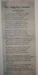
|
Item 2: "A Campaign Song for
Mr. Hoover," Ralph Chaplin (NL#194)
|
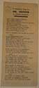
|
Item 3: “On Trial,” WPA
Protest (NL#281)
|
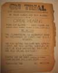
|
| Item 4: relief stations to
re-open (NL#283) |
 |
use in reproduction:
Photo, Art Booth: The
John Reed Club of Chicago, in the New Masses, August 1931 (NL#169)
|
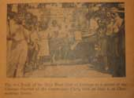
|
use in reproduction:
Photo, Orchestra: The
John Reed Club of Chicago, in the New Masses, August 1931 (NL#170)
|
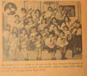
|
use in reproduction:
"The Funeral of 3 Negro
Workers Killed by Chicago Police", in in the New Masses, November
1931
(NL#173)
|
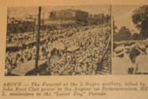
|
B.
Social Democracy or Government Tyranny?
|
Item 1: “We Do Our Part,” New
Masses critique of NIRA (NL#176)
|
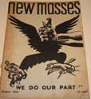
|
Item 2: The Paul Reveres pamphlet (1934)
[CHS#14]
|
no picture
|
Item 3: “The Body of Anarchy” by The Paul
Reveres
(NL#179)
|
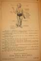
|
Item 4: "The Great American
Olympic" (NL#530)
|
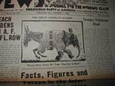
|
Item 5: Anarchy in a Library: a
Fable for Socialists (NL#536)
|
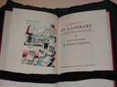
|
Item 6: Writers Take Sides:
Letters about the war in Spain from 418 American authors (NL#451)
|
no picture
|
use in reproduction:
Just in Case of a Slip (NL#531)
|
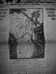
|
C.
Unionization and Social Citizenship: Memorial Day Massacre
|
Item 1: Steel Workers'
Organizing Committee Dues book, South Works (1938) [CHS#7]
|
no picture |
Item 2: SWOC Membership Button
[CHS]
|
no picture |
Item 3: Memorial Day
Incident, LaFollette Committee proceedings: Report Photos (pages
5142-5143) (1937)[CHS#10]
|
no picture |
Item 4: LaFollette Committee
Report: Composite image of bullet wounds (repro?)
|
no picture |
Item 5: Coroner's Subpoena
issued to George A. Patterson (1937) [CHS#7]
|
no picture |
Item 6: Strike Bulletin,
Women's Auxiliary flyer (1937) [CHS#6]
|
no picture |
Item 7: Estupendo Festival,
Mexican Steel Workers (1937) (flyer in Spanish, 21 Nov. 1937) [CHS#9]
|
no picture |